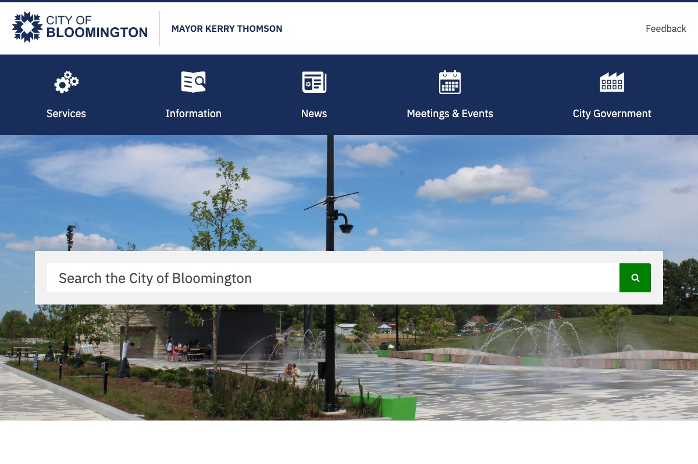
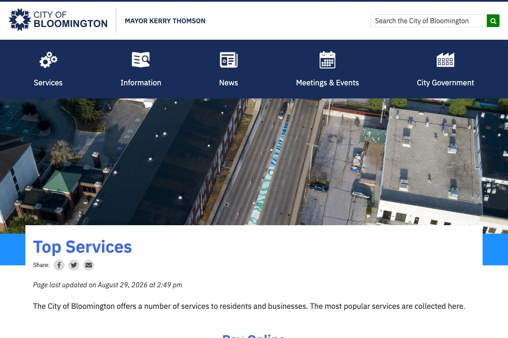

City of Bloomington accessibility assessment
Scope note: this page documents a review of the public city website. It is not a private clinic file, and it is not a live edit. Production changes stay with the City of Bloomington. Screenshots are the top of each page in the browser on 22 November 2026.
Introduction / professional profile
- Who you are
- Jade Zhao. Informatics student at Indiana University Bloomington, Luddy School, expected May 2027. Minors in Business Technology and User Experience (UX) Research. First-generation college student. Web Design and Accessibility Intern at the Laurie Burns McRobbie Serve IT Clinic, Jan 2024 to Dec 2025. Accessibility Project Lead from Aug 2026.
- Area of interest
- Digital Humans, human-centred artificial intelligence (AI), accessibility, and human-centred business technology. The question under the research is what makes a system trustworthy enough that people keep using it.
- Technical strengths
- WCAG (Web Content Accessibility Guidelines) 2.1 Level AA reviews, HTML structure, written remediation, and a handoff a partner can use after the student team is gone.
- The kinds of work you want to do
- Work that joins the technical fix to the person who has to use the system. Accessibility, human-centred product work, and Digital Humans research.
- Résumé, contact, and links
- Portfolio PDF (résumé is inside it). jlzhao@iu.edu. LinkedIn. GitHub. jadexzhao.github.io/jadexzhao.
Project overview
Residents use bloomington.in.gov to pay a bill, report a non-emergency problem, and contact the city. A homepage can look finished and still give a screen-reader user no page heading, plus news images whose names are filenames.
- Dates
- The city partnership sits in the Serve IT internship, Jan 2024 to Dec 2025. I am not publishing a single kickoff day, because that date is not in the public notes. The evidence on this page is from the live site on 22 November 2026.
- Team
- A student team in the Laurie Burns McRobbie Serve IT Clinic, matched with the City of Bloomington. The clinic places students with a community or government partner for course credit and expects notes the partner can keep. Teammate names are not listed on this public page.
- What the team was asked to do
- Review the public website and write what should change. The semester scope document is not republished here. The work on this page is a WCAG 2.1 Level AA review of structure, alternative text, and a sample of colour contrast. The student team does not rebuild the live city site.
- What my part entailed
- I reviewed the homepage and the Top Services page, compared their heading patterns, checked image names and the main navigation contrast, and wrote the fixes below. During the internship, my Serve IT work was documenting keyboard navigation, semantic structure, and contrast findings with a recommendation someone else can try.
Client description
Client: City of Bloomington, Indiana. Public site: bloomington.in.gov. The city's own homepage describes Bloomington as a southern Indiana city of about 85,000 residents, and a home for Indiana University students. The Top Services page, updated 29 August 2026, says the city offers services to residents and businesses and collects the popular ones in one place.
- Client needs
- Top Services is the public list of what the site is for: pay a water or trash bill, pay a parking citation, pay a permit fee, report an issue, find a staff member, contact a council member or the mayor, start water or sewer service, and reach housing, parks, and public-safety tasks. The clinic need that this page covers is an accessibility review of that public site, with notes the city can apply.
- What challenge the project was solving
-
The front door and the services page do not use the same structure.
Top Services has one
h1and groups tasks underh2headings. The homepage has noh1, and several news images are namedcob-thumbnail.png. A resident who relies on headings or image names does not get the same page a sighted reader sees. - Why the agency needed this
- Bill pay, issue reports, and council contact are city services, not optional articles. If those paths are hard to perceive or hard to navigate, the resident cannot finish the task. City staff keep the site. The useful deliverable is a note they can reproduce, not a student rebuild.
Process / approach
Final deliverables: this written review, two screenshots, the findings list, and the prioritised remediation notes. No live deploy.
- Read Top Services first, so the review starts from the tasks residents actually open the site to do.
- On 22 November 2026, open the homepage and Top Services in the browser. Record the document title, heading outline, landmarks, skip link, and image alternative text.
- Sample the icon navigation. Resting link text is white on navy
rgb(24, 45, 90), about 13.45:1, which clears the 4.5:1 AA ratio for normal text. That pairing is a pass, so it is not in the failure list. - Compare the two templates. Keep the Top Services heading pattern as the model for the homepage, instead of inventing a new one.
- Screenshot the top of each page. The heading and alt-text findings were read from the document. They sit below the hero, so the crops show the nav and the page title area, not every teaser.
- Write each failure as the page, the barrier, and a fix a city staff member can try. Leave anything that already works in its own row.
Standard used: WCAG 2.1 Level AA. The checks that drove the notes are non-text content (alternative text), info and relationships (headings), bypass blocks (the skip link, which is present), and contrast of the main navigation. A full keyboard pass of every form and portal is not claimed on this page.
Professional and technical skills
- WCAG 2.1 Level AA review
- Browser document review: headings, landmarks, skip link, image names
- Colour contrast check on the main navigation (computed colour against the nav bar)
- Comparison of two templates on the same site
- Screenshot evidence and written remediation
- Client handoff: the city keeps the live site
- GitHub, for publishing this case study
Deliverables / artifacts


Findings
-
Homepage heading outline. The homepage exposes no
h1. The outline starts ath2and stays flat: "Top Services", "News", "Events", individual event titles, and footer groups such as "City Government" are siblings. Two event headings used the same text, "Animal Control Commission- Special Session", so the outline does not tell them apart. Top Services does this differently: oneh1("Top Services"),h2groups ("Pay Online", "Contact The City"), andh3tasks. -
News image names. Four homepage news images use the alternative text
cob-thumbnail.png. That is a filename. A screen-reader user hears a file name instead of the story. Other images on the same page do have real descriptions, including the city logo and one news photo of a scholarship presentation. -
What is already working. "Skip to main content" is the first link, and it targets
#main-content. Amainlandmark and navigation landmarks are present. The search field exposes the name "Search". Icon-nav text is white on navy at about 13.45:1. The stylesheet also sets a focus background on those nav links,rgb(26, 79, 152), which is about 8:1 with white text.
Prioritised remediation (proposed)
-
P1 · One homepage h1.
Add a single page title as
h1. Demote section labels that are competing with it. Put event titles under the Events section ash3, and include the date in the heading when two events share a name. -
P1 · Image names.
Replace
cob-thumbnail.pngwith the story title. If the adjacent link text already names the story, and the image adds nothing, use empty alternative text so it is not read twice. -
P2 · Copy the working template.
Use the Top Services heading pattern (one
h1,h2groups,h3items) on the homepage instead of a new structure. Leave the skip link, the named search field, and the nav contrast in place. - P3 · Keyboard pass still to do. The nav focus style is in the stylesheet. A later pass should tab the icon nav, search, and one payment or report form on a real keyboard and confirm the focus background is visible. That pass is not claimed as finished here.
No client quotation is printed here. I do not have a cleared quote to attribute.
Final reflection
What I learned
A city homepage can pass the checks people notice first. The skip link is there, the nav contrast is strong, and the search field has a name. The failure was one level down: no page heading, and news images named like files. Top Services already showed the better pattern, on the same website.
Challenges, and how I handled them
The site is large, and the student team does not ship the fix. A note that says "improve the homepage" does not help a staff member who was not in the room. I limited the review to two pages, wrote only the barriers I could point at in the document, and recorded the contrast pass so a later edit does not "fix" a nav colour that already meets AA. Where I had not finished a check, the keyboard pass, I left it as open instead of describing a result I do not have.
What I would improve
I would file the semester roster, the kickoff date, and the scope sentence in the same week as the review. I would also screenshot the news row itself, not only the hero, so the filename problem is visible without reading the document tree.
Team communication
The comparison is the handoff. "Make the homepage like Top Services: one h1, then groups, then tasks" is something another student or a city editor can try. A contrast percentage with no colour values is not.
Ethical considerations
Paying a utility bill, reporting a street problem, and contacting council are resident tasks. A barrier on those pages is someone locked out of a public service. This page stays on the public HTML. It does not list non-public systems, staff who are not already on the public site, or security vulnerabilities. The city applies any change. I do not.
Technical growth
I used to treat contrast as the whole review. On this site the contrast passed, and the structure did not. Reading the heading outline, the image names, and a second template on the same domain told me more than another colour sample would have.
Related Serve IT work: Middle Way House accessibility case study · Town of Nashville accessibility case study. Fuller scrapbook: portfolio.pdf.